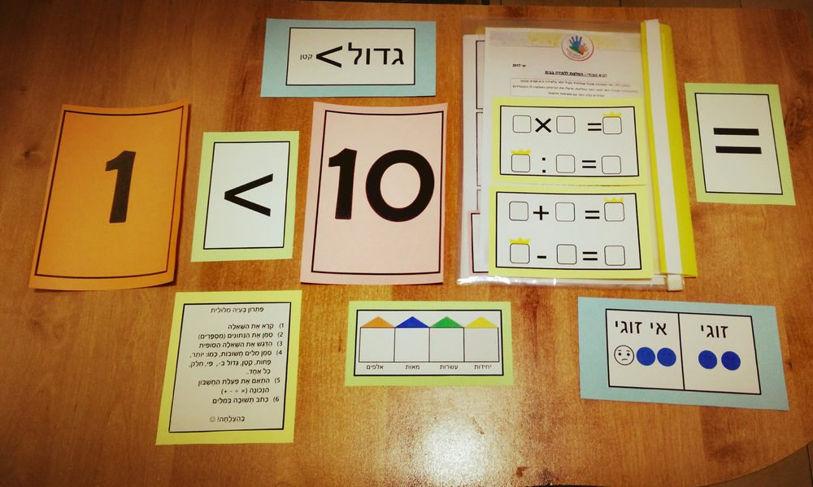

להלן מגוון השירותים שאני מציעה, ונועדו לסייע לילדיכם למצות את יכולותיהם ולהתמודד עם קשיי הלמידה:

הוראה מתקנת
(שיעורים פרטניים המיועדים לתלמידי בית ספר יסודי)
בתחילת התהליך תיערך פגישת הערכה. מטרתה לבחון את תפקודיו הנוכחיים של התלמיד ולבנות עבורו תכנית טיפולית אישית. הפגישה היא ללא התחייבות, והמשך הטיפול יעשה בהסכמת שני הצדדים.
ניתן לערוך שיעורי הוראה מתקנת במגוון תחומים:
שפה
- קריאה – הקניית אבני יסוד, שיפור דיוק/שטף קריאה.
- כתיבה – עיצוב כתב, מעבר מדפוס לכתב, צמצום שגיאות כתיב.
- אסטרטגיות למידה – הבנת הנקרא, התמודדות עם טקסט סיפורי/מידעי, כתיבת תשובה מלאה / סיכום / פיסקה, הכנה לקראת מבחן ועוד.
חשבון
נושאי הלימוד: אוטומטיזציה בטווח ה-10, שבירת עשרת, 4 פעולות חשבון, מבנה עשורי, שברים, אחוזים, פתרון בעיות מילוליות ועוד.
אנגלית
שיעורים פרטניים המיועדים לתלמידים המיומנים בשפה העברית ומתקשים ברכישת שפה שניה. נושאי הלימוד: הקניית אבני היסוד (קריאה וכתיבה), תרגול אוצר מילים, דקדוק והבנת הנקרא.
במקביל לשיעורים, ישנה אפשרות ליצירת קשר עם בית הספר וליווי לאורך השנה.
אבחון דידקטי (לקויות למידה)
עריכת אבחונים דידקטיים לתלמידי כיתות ב'–יב'. האבחון כולל בדיקת מנגנונים קוגניטיביים (כגון: חשיבה מילולית ובלתי מילולית, תפקודי זיכרון, תפיסה חזותית ושמיעתית), וכן תפקודים אקדמיים (קריאה, כתיבה והבנת הנקרא). ניתן להוסיף אבחון בתחומי האנגלית והחשבון.
האבחון ייערך על פני 2–3 מפגשים (בהתאם לגיל ויכולת הריכוז של התלמיד). לאחר כחודש תיקבע פגישת משוב ובה יינתן דו"ח כתוב. השירות כולל פגישה בתיאום עם צוות בית הספר לאחר האבחון.
מעבר לכך, הנני חלק מצוות המאבחנים במכון "קשב רב" בניהולו של הפסיכולוג דן ברזילי. קיימת אפשרות לביצוע אבחון פסיכו-דידקטי – האבחון יבחן היבטים פסיכולוגיים, באמצעות המבחנים המתאימים. מטרתו להעריך את תפקודי הלמידה ואת התפקודים השכליים-קוגניטיביים הפועלים בבסיס הלמידה, תוך התייחסות ליכולות ולקשיים בתחום האישיותי, הרגשי, ההתנהגותי והחברתי.
*** מתן התאמות והמלצות בהתאם לממצאי האבחון.
מבדק MOXO
MOXO היא מילה ביפנית, שלקוחה מעולם הקראטה והמשמעות שלה היא: רגע של צלילות, הרגע שלוקח לעצמו הלוחם לפני הקרב, להתרכז ולנשום.
המבדק הוא כלי עזר – תומך החלטה, באשר לקיומה של הפרעת קשב וריכוז. המבדק ממוחשב, ובסופו מתקבלת תמונה שממפה את יכולות הקשב. דרכה ניתן, בין השאר, להתאים סביבת עבודה ודרכי עבודה תומכות ויעילות לתלמיד בבית ובבית הספר.
מוזמנים לקרוא עוד על המבדק באתר: moxo-adhdtest.co.il